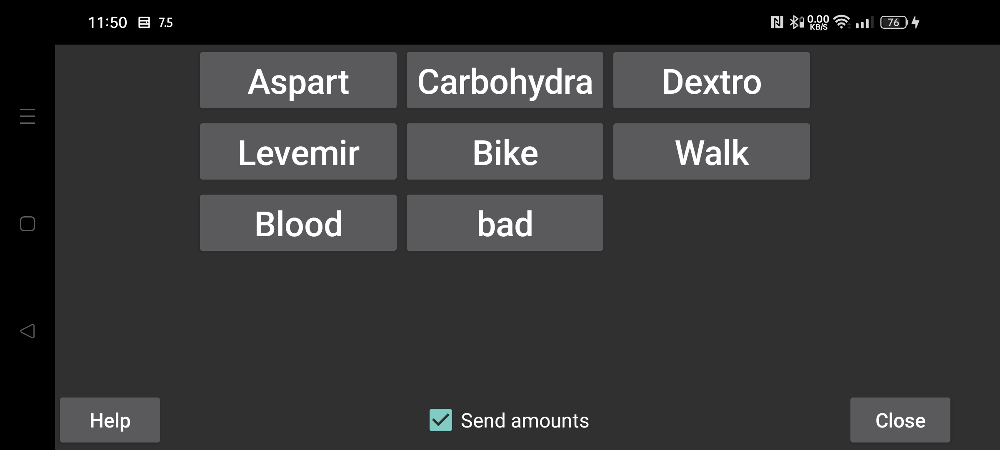

ar az be de es fa fr hi it ja ko nl pl pt ru tr uk uz zh en
برای فرستادن «مقدارها» به LibreView، گزینهٔ «ارسال مقدارها» را فعال کنید. پیش از فعالسازی باید مشخص شود مقدارهای هر برچسب با کدام دسته در LibreView فرستاده شوند. ساخت، تغییر و حذف برچسبها در «منوی چپ ← تنظیمات ← برچسبهای مقدارها» انجام میشود. (every label) (Number Labels)
برای برچسبهایی که بهشکل یادداشت به LibreView ارسال میشوند، محدودیتی وجود دارد: پس از تغییر نام برچسب، حذف یا ویرایش مقدارهایی که با نام قبلی فرستاده شدهاند در LibreView منعکس نمیشود. مثلاً اگر ابتدا با برچسب «دوچرخ» مقدار ۲۰ را ثبت کنید، سپس نام برچسب را به «دوچرخهسواری» تغییر دهید و مقدار را به ۲۵ اصلاح کنید، هر دو یادداشت «دوچرخ ۲۰» و «دوچرخهسواری ۲۵» ممکن است در LibreView بمانند. راه اصلاح آن حذف دستگاههای فعلی در LibreView و زدن «ارسال دوبارهٔ دادهها» در Juggluco است.